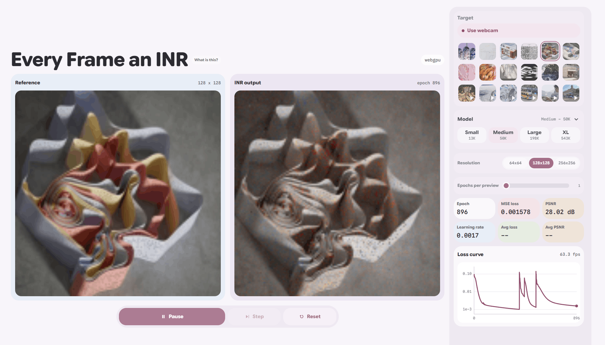

I've written extensively about implicit neural representations (1 2 3) during the last year, which I refer readers interested in what an implicit neural representation is to. The learning process is somewhat mesmerizing to watch and interactive tools make such a bigger impression when you use them compared to just reading so I thought I'd make one. That tool is Every Frame an INR and can be run in the browser with WebGPU.

It's meant as a learning art project more so than a research artefact, and was constructed with extensive help from Codex. I could describe it here, but it should be simple enough that you'd be better off spending your time using it instead of reading about it. Happy learning!